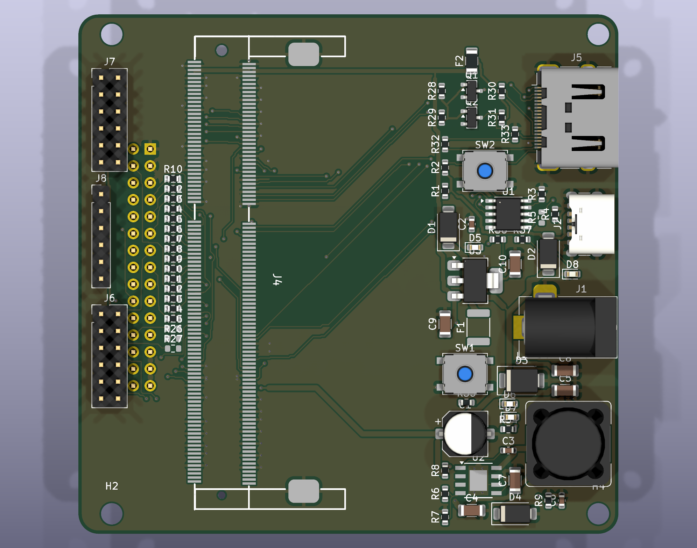
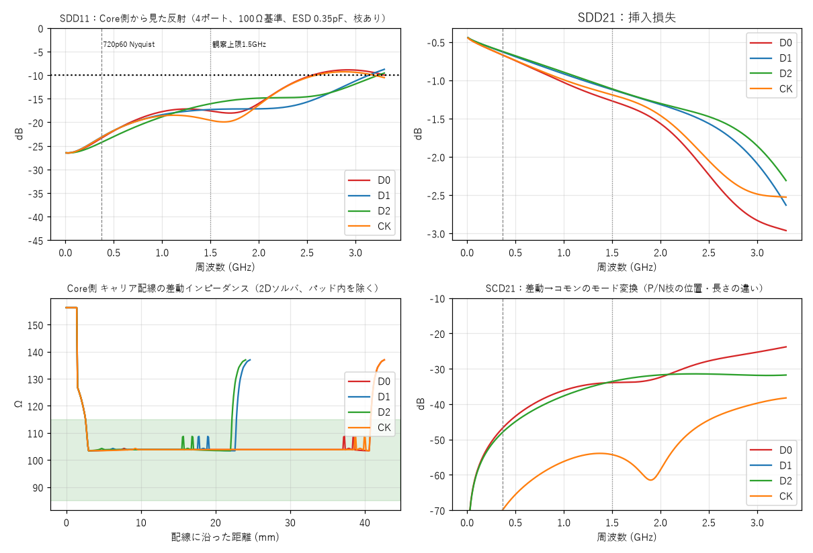

1. 概要
8bit → 16bit初期はPARLIO 8bit並列。回路は16bit拡張を想定
外部 12〜24VDCバレルジャック1つでTab5(HVIN)とFPGA(別系統5V)へ
HDMI 入出力出力はTLVDS直駆動、入力は直結実験から
JLCPCB PCBA基本部品中心。拡張部品が多ければTHT手組
図1 積層構成。Tab5側の面にM5-Bus用ピンヘッダ、外側の面にCoreソケットとコネクタ類を集約。
この文書の位置づけ
Tab5・Core・ESP32-P4の一次資料（回路図・データシート）を取得して照合した結果と、それに基づく設計方針をまとめたものです。回路図・PCBは未作成です。確認済み事項と、まだ確認できていない事項を区別して記載しています。
★ 初期仕様まとめ（v1.0 案）
ここまでの検討で決めた初版の仕様です。詳細と根拠は各章を参照してください。
| 項目 | 初期仕様 | 状態 |
|---|
| 構造 | M5-Bus直挿し。Tab5側の面＝ピンヘッダのみ、反対面＝Core・コネクタ類。Tab5背面のM3穴でスタック。約125×78mm（Tab5全幅）、4層1.6mm。Coreはヘッダの右に180°回転して配置、HDMIは右辺の上寄り（キーボードは下側）、電源は左 | STLで実測済み |
| FPGA | Tang Primer 20K Core（SODIMM 204P・横置きソケット、縦置き配置）。JTAG/UARTはCore上のJST-SHデバッガに手が届く配置 | 確定 |
| 電源入力 | ① DCバレルジャック 12〜24V ② USB-C PD（電源専用6ピン、PDトリガIC CH224K、20V要求／15Vに切替可） ①②はダイオードOR | 24V運用は定格確認後 |
| 電源分配 | Tab5へ：M5-Bus HPWR（25/27/29）直結（内部PTC 1Aに制限）／FPGAへ：TPS5430で5V（目標2A以下）。Tab5の5V（ピン28）とは接続せずGNDのみ共通 | 確定 |
| 入力保護 | 逆接続（SS54）・TVS・PTC約3A | TVS要選定 |
| 通信（8bit） | D0〜D7＝G18,G19,G5,G3,G4,G2,G48,G47／CLK＝G16／READY＝G45／DIR＝G51／補助＝G17,G52,G6,G7。信号は33Ω直列抵抗 | 競合なし確認済み |
| 16bit拡張 | G37/G38/G35を0Ωジャンパで拡張線に出せる設計（既定は未実装） | 実機検証が必要 |
| キーボード | Ext.Port1（G0/G1/G50）を使うため8bit動作中も併用可 | 機械干渉は要確認 |
| HDMI | OUTのみ（FPGAのTLVDS直駆動）。INは搭載せず、差動ペアをパッドに引き出す | 確定 |
| Ethernet | 100Mbps（RMII）のPHY＋RJ45のフットプリントを用意。実装は任意 | 任意実装 |
| 拡張用パッド | PMOD（2×6、3.3V）×2と空きIOパッド（1×9）。パッドのみ・ヘッダ未実装（DNP）、後付け | 確定 |
| その他 | LED ×4、ユーザーボタン ×1、リセットボタン（Tab5 RST）、FPGA ON/OFFスライドスイッチ（THT） | 確定 |
初版で搭載しないもの
| 項目 | 理由 |
|---|
| バッテリー駆動 | M5-Busにバッテリー線が出ない（保留） |
| HDMI入力 | 帯域（720p60≒160MB/s）が8bit並列の40MB/sを超える。受信ICは高価 |
| USBホスト | Tab5にUSB-Aホストがあり、FPGAはフルスピードまで。ソフト実装が重い |
| MIPI CSI | GW2A-18にD-PHYなし。CSIはM5-Busに出ていない。DVPで代替可能 |
| Gigabit Ethernet | Tab5側の40MB/sで頭打ち |
拡張部品とTHT手組の見込み
- 拡張部品（避けられないもの）：DDR3 SODIMMソケット。
- 拡張部品（採用により増えるもの）：CH224K（PD）、Ethernet実装時のPHYとRJ45。
- THT手組候補：DCバレルジャック、HDMIコネクタ、PMODヘッダ、M5-Busヘッダ、RJ45、USB-C電源専用6ピン。
2. 機構・外形
方針：Tab5の背面にあるM3ネジ穴に合わせて基板にも穴を開け、ネジ止めでスタックできるようにします。Tab5側の面にはM5-Bus用ピンヘッダのみを出し、反対面にCoreソケットとHDMI等を載せます。
図2 Tab5を背面から見た図（縮尺1mm＝6px）。丸＝M3ネジ穴の位置（Tab5左上を原点とした座標mm）。二重丸＝小穴。M5-Bus位置・基板外形・部品配置は図面から読み取った概念案で、実寸はSTL・実機で確認します。
Tab5背面のネジ穴（公式寸法図より）
| 穴 | 座標 (x,y) mm | 用途・備考 |
|---|
| 四隅の主穴 | (51,4) (51,76) (124,4) (124,76) | M3×10。キャリアのスタック用（73×72mmの矩形） |
| 中央ボス | (96,18) (96,62) | M3ボス（44mm間隔）。キャリアにも穴を開け、補強用に使用 |
| 左側（バッテリーベイ側） | (4,4) (4,76) ほか | バッテリーベイ周辺。キャリアは使用しない |
要確認
上記座標は寸法図の画像から読み取りました。Tab5背面は筐体形状が複雑で、M5-Busの位置（図では背面左寄りの縦長コネクタ、約39mm）も図面からの推定です。製作前に reference/tab5/Tab5.stl を使ったCAD重ね合わせ確認が必要です。
Core（Tang Primer 20K）の寸法
- 外形 67.6 × 30.0mm、DDR3 SODIMM 204ピン形状（ピン1〜71／73〜204、キー切欠きあり）。
- Core上のJST-SH 8ピン（JTAG＋UART）デバッガコネクタに手が届く配置にします。
- ソケットは横置き（Coreが基板と平行）のSODIMMソケットを想定し、HDMI・DC入力は反対側の縁に配置。
キーボード（A164）との機械干渉
Tab5用キーボード（128×59.4×13.1mm）は下部のExt.Port1に装着します。キャリアは背面のM5-Bus側にあるため配線上の競合はありませんが、厚みと外形の干渉はCADで確認します。
3. 電源
前提の訂正（回路図で確認）
NP-F550 は2S（直列2セル）7.4V公称、満充電8.4V、放電終止約6Vで、4.2Vではありません（Tab5回路図に SYS_BAT_2S、ピンマップに「BAT 2S」）。
また M5-Busのピン30「BAT」はバッテリー直結ではありません。回路図では VBAT_OUT が内部5Vからの降圧（SY8089、帰還抵抗100k/22kで約3.3V）出力です。M5-Busからバッテリー電圧を取り出すことはできません。
Tab5側の電源構造（回路図4頁より）
図3 Tab5内部の電源経路。HVINは1A PTCを通るため、Tab5が使える電力が制限される。バッテリー電圧はM5-Busに出ない。
決定：外部12〜24VをDCバレルジャック／USB-C PDで受け、Tab5とFPGAの両方へ供給
方針変更（バッテリー駆動は保留）
バッテリー駆動はいったん中止します（M5-Busにバッテリー線が出ないため）。キャリア基板にDCバレルジャックを設け、外部12〜24Vを1系統で受けて、Tab5（HVIN）とFPGA（Core 5V）の両方に供給します。バッテリーはTab5単体用として従来どおり残ります（Tab5内部でHVIN電源と自動切替）。
図4 キャリアの電源構成。1つの外部電源から2系統に分岐し、それぞれ独立して降圧される。
各部の仕様案
| ブロック | 仕様案 | 備考 |
|---|
| 入力コネクタ | DCバレルジャック（THT、5.5×2.1mm 想定）＋予備の2pinネジ端子パッド | 極性はセンタープラスで統一。手組THTでコスト削減 |
| USB-C PD入力 | 電源専用6ピンコネクタ＋PDトリガIC（CH224K）。20V要求（設定で15Vに切替）。バレルジャックとダイオードORで1つの電源ノードへ | 45W以上の充電器が目安。起動直後の5V→20V遷移中はDC-DCのUVLOで待機させる。充電器が20Vに対応するか要確認 |
| 入力電圧 | 12〜24V | Tab5 HVINは「6〜24V」表記。24V運用はMP4560の絶対最大定格の確認が前提 |
| 逆接続保護 | 直列ショットキー（SS54：40V・5A、基本部品） | 損失は電流×約0.5V。PMOS方式はAO3401Aが30Vのため24V＋サージで余裕が小さく、第一案はダイオード |
| サージ・過電流 | TVS（24V級）＋PTCヒューズ（合計の定格に合わせる） | Tab5側は内部に1A PTCがあるため、入力PTCは約3Aホールド程度（Tab5最大1A＋FPGA側） |
| Tab5側分岐 | M5-Bus 25/27/29（HPWR）へ接続。キャリア側に追加の降圧はなし | Tab5の消費は内部PTCで最大約1A。12V入力で約12W |
| FPGA側分岐 | 降圧DC-DC（TPS5430DDAR、入力5.5〜36V・3A）→ 5V → Core | Core＋HDMI＋周辺で2A以下を目標。インダクタ・ダイオード(SS34)は基本部品 |
| 電源投入順 | ソフトスタートのみ。Tab5とFPGAは同時起動 | 信号は33Ω直列抵抗、G35/G37/G38は隔離（第5章） |
| 5Vの分離 | Tab5のEXT5V（ピン28）は未接続 | GNDのみ共通 |
24V入力の注意
TVSのクランプ電圧は、24V級で約39V（SMBJ24A）です。Tab5のMP4560と、キャリアのTPS5430（絶対最大定格は約40V付近、データシートで要確認）に対して余裕が小さいため、24V運用を本当に使うかを先に決めます。確実に収めるなら入力を12〜19V程度に制限するか、24V級より低いスタンドオフのTVSと組み合わせて、Tab5側の絶対最大定格を確認してから選定します。
保留項目
- バッテリーからのFPGA給電：中止（旧案Aのタップ基板・J12配線）。将来必要になれば再検討。
- Tab5 EXT5V（ピン28）からの給電：不採用。Tab5の5V系とFPGAの電力を共有してしまうため。
4. GPIO競合検証
Tab5回路図の全頁で各GPIOのネットを検索し、M5-Bus以外の接続先を確認しました。ESP32-P4データシートのストラッピング・JTAG仕様とも照合しています。
競合なし条件付き使用不可／要隔離電源・制御
図5 M5-Bus 30ピン（Tab5回路図3頁で確定）。D0〜D7＝8bitデータ、「補助」＝予備線。
| GPIO | M5-Bus | Tab5内部の接続先 | 判定 |
|---|
| G16, G17, G45, G47, G48, G51, G52 | 2,4,8,23,22,26,10 | M5-Bus以外に接続なし | ◎ |
| G2, G3, G4, G5 | 21,19,20,11 | JTAG兼用だが、既定のJTAG信号源はUSB-Serial-JTAG（eFuse未焼損）なので競合なし。eFuseでPAD_JTAGを有効化しないこと | ◎ |
| G18, G19, G5 | 7,9,11 | 上記に加えCOM.X(STAMP)モジュール用パッドに接続 | ○ COM.X非装着が条件 |
| G6, G7 | 16,15 | COM.X用UART | ○ COM.X非装着が条件 |
| G31, G32 | 17,18 | Tab5内部I2C（カメラ・音声・IMU・RTC・タッチ・電力計・IOエキスパンダ）と共有。2.2kΩプルアップ済み | △ アドレス衝突確認が必須 |
| G35 | 24 | BOOTストラップ（10kΩプルアップ＋BOOTボタン） | × データ線に不可 |
| G37, G38 | 14,13 | UART0。ストラッピング対象 | × 8bit案では不使用 |
| G0, G1, G50（G49） | なし | Ext.Port1。キーボード＝G0 SDA, G1 SCL, G50 INT（I2C 0x6D） | キャリアは使わない |
結論：8bit割当は競合なし／キーボード併用可
D0〜D7＝G18,G19,G5,G3,G4,G2,G48,G47、CLK＝G16、READY＝G45、DIR＝G51 はそのまま採用できます。キーボードはM5-Busに無いG0/G1/G50を使うため、8bit動作中も併用できます（SYS I2Cとは別バス）。
5. 8bit と 16bit
8bit（初期）
- データ：8本（G18,G19,G5,G3,G4,G2,G48,G47）
- 制御：CLK＝G16、READY＝G45、DIR＝G51
- 補助：G17,G52,G6,G7（UART／リセット／構成）
- 理論帯域：8bit×40MHz＝40MB/s
16bit（将来）
- データ：16本、CLK1本 → 17本
- M5-BusのI2C以外のGPIOは18本、うちG35/G37/G38はストラップ
- → M5-Busだけでは「16bit＋CLK＋READY＋DIR」は成立しない
- 理論帯域：16bit×40MHz＝80MB/s
図6 8bit運用時の使い道と、16bit化で不足する本数。
16bit化の選択肢 比較
| 案 | 内容 | 帯域 | リスク | 備考 |
|---|
| 1. DIR廃止＋ストラップ線転用（推奨） | DIRとREADYをサイドバンド（I2C／補助線）へ。G35/G37/G38もデータ線に使い、起動時はバススイッチ／0Ωジャンパで隔離 | 80MB/s | 中 | 起動時にFPGA出力がHi-Zであることの実機検証が必須。8bit運用時は拡張線を切り離す |
| 2. 8bit DDR（両エッジ） | 8本のまま両エッジでサンプルし実効16bit相当 | ≒80MB/s | 中 | PARLIOがDDRに対応するか未確認 |
| 3. Ext.Port1／Port.Aから追加引出し | G0/G1/G49/G50/G53/G54をケーブルで追加 | 本数不足 | 高 | キーボード（G0/G1/G50）と競合する |
| 4. 8bitのまま | クロックを上げて対応 | 40MB/s | 低 | 初期ソフト開発はこれで十分 |
基板は案1に備え、拡張用のG37/G38/G35を0Ωジャンパ（既定は未実装）でFPGA側に接続できるようにします。
6. HDMI（初版はOUTのみ）
決定初版はHDMI OUTのみを搭載します。INは用途が限られ（720p60は約160MB/sで、Tab5への8bit並列40MB/sを超える）、受信ICも高価なため見送り、差動ペアをパッドに引き出すだけにします。以下の比較表は検討の記録です。
| HDMI 出力 | HDMI 入力 |
|---|
| 方式 | GW2A-18のTLVDS出力でTMDS（DVI互換）を直接駆動 | TMDSを交流結合＋バイアス＋100Ω終端でFPGAのLVDS入力へ直結（実験構成） |
|---|
| バンク電圧 | Bank0/1は既定3.3V（Core上R5で変更可）→ TMDSに適合 | 同上 |
|---|
| 追加部品 | 直列抵抗、ESD保護、5V給電（ヒューズ／ダイオード）、DDC用MOSFETレベルシフタ（2N7002） | AC結合コンデンサ、バイアス抵抗。専用レシーバICは高価・拡張部品のため初版は見送り |
|---|
| 難度 | 低〜中 | 高（動作しない場合は受信ICフットプリントを検討） |
|---|
| 想定解像度 | 720p60を目標（1080p60はGW2Aのシリアライザ上限により保証対象外） | 720p60程度まで（測定） |
|---|
| 基板要件 | 4層、差動ペアは100Ω差動インピーダンスで並走配線（線幅0.2mm・間隔0.13mm、JLCPCB 4層）、ペア内スキュー0.00mm。FPGA側はBank0のTLVDSペア（TX1/TX2/TX3/TX5）、AC結合100nF＋499Ωバイアス＋ESDは公式Dockと同じ構成（9章） |
|---|
要確認HDMI入力をAC結合で直結できるかは、GW2A-18のLVDS入力仕様（同相入力範囲・終端）をデータシートで確認する必要があります（Sipeed Datasheet V1.0は認証コード入力が必要なため未取得）。
7. 搭載周辺（優先度）
| 優先 | 周辺 | 実装方針 |
|---|
| 高 | FPGA書込み・デバッグ（JTAG＋UART） | Core上の公式JST-SH 8pinデバッガに手が届く配置＋2.54mm引出し |
| 高 | PMODコネクタ×2〜3（2×6、3.3V） | THTピンヘッダ。FPGA空きIO、GND、3V3 |
| 高 | LED・ボタン | 基本部品のLED・タクトスイッチ |
| 中 | UART（FPGA↔Tab5 G6/G7） | ジャンパ選択 |
| 中 | DVPカメラ24P FPC／RGB LCD 40P FPC | Dock回路図を参考に必要時に追加（FPCは拡張部品になりやすい） |
| 中 | I2Cサイドバンド（G31/G32） | Tab5内部アドレス（0x10 ES8388, 0x40 ES7210, 0x43/0x44 IOエキスパンダ, 0x68 BMI270, 0x32 RTC等）と衝突しない値を使用 |
| 低 | 入力電圧監視、ファンヘッダ | 抵抗分圧／保護付き出力 |
| 任意 | Ethernet（100Mbps RMII） | PHYとRJ45のフットプリントを用意し、実装は任意。Tab5に有線LANを足したい場合に有効 |
| 採用 | USB-C PD給電（20V要求） | 電源専用6ピン＋CH224K。バレルジャックとOR接続 |
| 見送り | USBホスト、MIPI CSI、HDMI入力 | PMODと差動ペアのパッドに引き出すのみ |
8. JLCPCB PCBA 方針
基本部品で構成する
- 抵抗・コンデンサ・LED・ダイオード（SS34/SS54/1N4148W）
- MOSFET（2N7002, AO3401A）
- 降圧IC（TPS5430DDAR／XL1509-5.0E1）
- LDO（AMS1117-3.3）、フェライト、タクトスイッチ
※基本/拡張の区分は在庫で変動。BOM確定時にJLCPCB部品ライブラリで再確認します。
拡張部品・THT手組の扱い
- 避けられない拡張部品：DDR3 SODIMMソケット（204P）のみ許容
- 拡張が増える場合はTHT化して手付け：HDMIコネクタ、DCジャック、PMODピンヘッダ、M5-Bus用ピンヘッダ
- M5-Bus用ヘッダは2×15・2.54mm。ピン長（スタック間隔）と勘合を実機寸法で確認
| 部品 | 候補 | JLC区分（検索データ） | 備考 |
|---|
| 5V降圧（広入力） | TPS5430DDAR | 基本 | 入力5.5〜36V・3A。第一候補 |
| 5V降圧（簡易） | XL1509-5.0E1 | 基本 | 入力4.5〜40V・2A。バッテリー低電圧側は余裕小 |
| 3.3V LDO | AMS1117-3.3 | 基本 | 周辺用 |
| ショットキー | SS34／SS54 | 基本 | 降圧用・OR接続用 |
| DDC用MOSFET | 2N7002 | 基本 | I2Cレベルシフタ |
| RS485（予備） | SP3485EN | 基本 | 必要時 |
| SODIMMソケット | （未選定） | 拡張見込み | 横置きタイプを選定。KiCadフットプリントはSipeed配布物を参照 |
| HDMIコネクタ | （未選定） | 拡張見込み | THT手組も可 |
9. KiCad設計データ（v2.0 ドラフト）
回路図とPCBを同じデータ定義から生成しました（kicad/）。Core（SODIMM）のピン割当はSipeed回路図と目視照合済みで、回路図とPCBのネット一致は自動検証しています。v2.0でCoreの向きとHDMIの位置を見直し、HDMIの回路を公式Dockの構成に合わせ、TMDSを差動ペアとして配線しました。

図7 KiCad 3Dレンダリング（Tab5背面から見た向き）。SODIMMソケットは3Dモデルが無くパッドのみ。M5-Busヘッダは反対面（Tab5側）。上辺がキーボードと反対側。
配置の考え方（v2.0）
| 領域 | 内容 | 理由 |
|---|
| 中央 | M5-Busヘッダ（2×15）と33Ω直列抵抗列 | Tab5側のコネクタ位置に固定 |
| 中央右 | Core（SODIMM）。M5-Busの右に180°回転して配置。カードは右へ平置き | バス用の奇数列パッドがヘッダ側を向き、短い直線リンクで接続。ソケットの両側は背の高い部品を置かない |
| 右辺の上寄り | HDMI Type A（標準）。信号はCoreの下のカード領域を通って短く到達 | キーボードは基板の下側に付くため、HDMIは上側。上辺に置くとソケット端を回り込んで配線できなかった |
| 左側 | DCバレルジャック（左端）、USB-C PD（左端・上寄り）、降圧DC-DC（左下）、LDO | Coreの反対側に電源系を隔離。USB-Cは取付ネジから10mm以上離した |
| 上辺の左 | FPGA電源スイッチ、ユーザーボタン、リセットボタンを横一列 | 操作部を1か所に集約 |
| 右下 | PMOD ×2、空きIOパッド（1×9） | パッドのみ・ヘッダは未実装（DNP）。後付け可能 |
寸法ルール：HDMI・USB-C・DCジャック以外の部品は基板端から2.5mm以上、すべての部品はM3ネジ穴の縁から5mm以上離しています（筐体・ドライバ作業のため）。
HDMIの回路（公式Dockを参考に変更）
| 項目 | 公式 Tang Primer 20K Dock | このキャリア基板（v2.0） |
|---|
| TMDSの結合 | 100nF のAC結合（各線） | 同じ：100nF ×8（Basic部品） |
| バイアス | コネクタ側で499ΩをGNDへ（各線） | 同じ：499Ω ×8 |
| ESD（TMDS） | RCLAMP0524P ×2（4ch） | RCLAMP0524P ×2（LCSC C293965、DOWO製、拡張部品）。信号線は連続した銅配線とし、ESDは分岐として接続（足1/10などを基板上でつなぐ。部品内部の導通に依存しない） |
| ESD（DDC/HPD） | SRV05-4 | 同じ：SRV05-4（C13612、拡張部品） |
| FPGAのTMDSペア | TX1〜TX5から4組 | TX1/TX2/TX3/TX5。TX4はCore基板内でN側が1.9mm短い（公式の配線長表より）ため不使用 |
FPGA側の注意
D2はTX5のP/Nを物理的に入れ替えて接続しています（基板上の並びを崩さず交差させないため）。FPGAでD2のデータビットを反転してください（TMDSのデータ線では許容。クロックでは不可）。対応表は kicad/core_pin_assignment.csv に注記しています。
追加した機能
- リセットボタン：M5-Bus RST（ピン6）をGNDへ。Tab5（ESP32-P4）をリセット。
- FPGA電源ON/OFF：スライドスイッチ（THT）で降圧ICのENをGNDへ。Tab5は本体のボタンでオン/オフ。
- 空きIOパッド：FPGAの空きIO ×7＋3.3V＋GND（デジタルのみ。FPGAにADC/DACは無い）。
- ユーザー入力：ボタン ×1（BTN0）、リセット ×1、LED ×4。
設計検証の結果
| 項目 | 結果 | 状態 |
|---|
| 外形・層構成 | 125×78mm（Tab5は128×80mm）、4層（F.Cu／In1=GND／In2=信号＋GND／B.Cu）、M3穴6か所（実測位置） | 生成済み |
| 回路図 | A0・1枚。データ定義とネットリスト一致（不一致0）、ERC違反0 | 生成済み |
| 配線 | 113ネット全て自動配線（3配線層＋リップアップ＋ピンスワップ＋TMDSのペア配線）。GNDは内層ベタ＋表裏ベタ＋スティッチビア | 完了 |
| DRC | エラー0件、未接続0件。残りはシルク重なり警告のみ | クリーン |
| 配線幅・間隔 | 信号 0.127mm/0.127mm、TMDSペア 線幅0.2mm・ペア内間隔0.13mm、ビア 0.6/0.3mm、電源 0.4〜0.8mm | 確定 |
| HDMI TMDS | ペア内スキュー0.00mm（4組すべて）、結合区間の差動インピーダンスは約103Ω（2Dソルバ）。独立監査の指摘（ESD端子導通の想定、499Ω枝の長さ）を是正：ESDは連続した銅配線への分岐、枝は2〜11mmに短縮（以前21〜53mm）。D1のN側（11.5mm）は目標未達（第2回監査への対応状況（第3版））。複合条件（Core 85Ω×ESD大）でSDD11目標を外れる条件あり | 是正済み・検査修正追記あり |
| 機構 | 取付穴・M5-Bus開口をTab5.stlから実測。背面は平坦（M3×10＋2.5mmスペーサ） | 確認済み |
HDMI信号品質のシミュレーション
独立監査の結果
6450c42の再監査・開発引き継ぎを公開しました。
保存数値は再現できましたが、監査対象版にはESDの導通想定と長い抵抗枝の問題が残ります。
「26か所の不連続」は解析用リストの問題で、PCBの26か所の断線を意味しません。
開発側ではTMDS連続配線・ESDシャント接続・499Ω抵抗の近接配置へ修正しました（第2版）。第2回監査（
7929491対象）の指摘A1〜A5には第3版で対応しました。
是正の完了は未判定（再監査待ち）です。
第2回監査（A1〜A5）に対応し、再評価しました（第3版レポート）ESD実部品（DOWO RCLAMP0524P）のデータシートとフットプリントを照合して
GNDランド幅の不足を修正、全TMDS銅を分類して
解析から抜けていた引き出し線を追加、抵抗枝をP/Nの別位置に接続する
4ポートモデルへ変更し、Core Z×ESD容量の
複合感度を評価しました。目標は
720p60のPoC（1080p60はGW2Aのシリアライザ上限を超えるため対象外）。詳細は
第3版レポート。
残課題（第3版に明記）複合条件（Core 85Ω＋ESD 0.35〜0.5pF）でSDD11の自主目標（−10dB）を外れる／D1のN側の枝11.5mm／3D解析（openEMS）は較正未達で未着手／MeOS向け要求（PARLIO・電源断など）は別作業。
公開されているオープンソースだけで、基板データから実形状を取り出して評価しました。範囲はキャリア基板側のみです（Coreの基板データは未取得で、公式の配線長表だけが得られるため、Core内は長さ38.4mmの理想100Ω線路として接続）。方針と調査の記録は docs/HDMI_信号品質_調査と方針.md。
- 2D電磁界ソルバ（自作、numpy）：JLCPCB 4層（L1–L2間0.2104mm）の差動インピーダンス（偶モード・奇モード）。50Ω用単線0.35mmで51.7Ω（公表値と一致）。
- チャネル推定（4ポートのABCDカスケード）：配線の区間ごとのインピーダンスと長さから、差動S パラメータとモード変換（SCD21）を推定。
| ペア | P/N長（引き出し線含む） | ペア内スキュー (mm) | SDD11 371/742MHz | SDD11 最大(〜1.5GHz) | SDD21 371/742MHz | SCD21 最大 |
|---|
| D0 | 59.0 / 59.0 mm | 0.00 | -23.4 / -19.4 dB | -17.2 dB | -0.67 / -0.88 dB | -33.9 dB |
| D1 | 41.0 / 41.0 mm | 0.00 | -24.0 / -19.4 dB | -12.9 dB | -0.63 / -0.84 dB | -24.9 dB |
| D2 | 41.0 / 41.0 mm | -0.00 | -24.3 / -20.8 dB | -16.1 dB | -0.62 / -0.78 dB | -33.6 dB |
| CK | 59.6 / 59.6 mm | 0.00 | -23.2 / -19.8 dB | -18.5 dB | -0.67 / -0.87 dB | -53.9 dB |

図8 TMDS 4組の差動S11/S21・モード変換の推定と、Core側配線の差動インピーダンス（緑帯が100Ω±15%）。
この推定の限界
準静的モデル（P/Nを別々に持つ4ポート。全層を同じマイクロストリップ表で近似、ビアは未考慮、コネクタは理想）です。実形状の3D電磁界解析（openEMS）は較正未達で、結論には使っていません。実機では、短いケーブル・限定モニタでの720p60表示確認を成功条件とし、反射の測定（TDRまたは公式Dockとの比較）を推奨します。
経緯：P/Nを別々に配線すると不合格だった
最初の配線（P/Nを個別に引く）では、ペア内の長さの差が最大13mm、差動インピーダンスは約160Ω（+60%）でした。P/Nを1本の太い線として引いて2本に分けるペア配線をルータに実装し、改善しました。
FPGAピン割当を最適化しました
FPGAのピンは自由に割り当てられるため、基板上の並び順に合わせて信号を振り直しました（ピンスワップ）。バス18本はヘッダのピン順どおりに並行して降りるため、配線が交差しません。対応表は kicad/core_pin_assignment.csv です。
製造前に必要な作業
- M5-Busヘッダのピン1の向きを実機で確認する（STLから位置は確認済み）。
- HDMIの実形状3D電磁界解析（openEMS等）で、ビア・ESD・コネクタ接続部を確認する。
- 499Ω抵抗の枝（D1のN側 11.5mm）をさらに短縮する（目標：数mm以下。複合条件でSDD11目標を外れるのはD1）。
- RCLAMP0524P（DOWO DFN2510-10L）：専用フットプリントを作成済み（GNDランド幅を修正）。メーカー推奨ランドは無いので、注文時にJLCPCBのフットプリントと向き（端子1）を確認する。499Ωの部品区分も確認する。
- SODIMMソケットの3Dモデルと、部品のLCSC番号・基本/拡張区分を確定する（
kicad/bom.csvの「check」行）。
- FPGAの制約ファイル（.cst）を、ピン対応表から作成する（D2のデータ反転を忘れない）。
10. 未解決事項
| # | 項目 | 決めること／確認方法 |
|---|
| 1 | 入力保護と24V運用の可否 | MP4560／TPS5430の絶対最大定格を確認し、TVSと入力電圧範囲（12〜24Vか12〜19Vか）を決める |
| 2 | 16bit方式 | 案1〜3のどれにするか。G35/G37/G38の起動時動作の実機検証 |
| 3 | M5-Bus位置・基板外形 | Tab5.stlでCAD確認。ピン1の向き、ヘッダ高さ、キーボードとの干渉 |
| 4 | DCバレルジャックの機種 | THT品の寸法・センタープラス極性・基板配置（背面の縁） |
| 5 | SODIMMピンマップ確定表 | 現在は機械抽出の暫定CSVのみ。Dock回路図・ibomで確定 |
| 6 | HDMI入力方式 | LVDS入力仕様の確認（Datasheet V1.0を手動取得）→直結／受信IC |
| 7 | Coreの消費電流 | 実測で降圧ICの余裕を確定 |
| 8 | PARLIO速度上限・DDR対応 | 低速→10→20→40MHzの段階測定 |
11. 参考資料
データの確からしさ
確定：M5-Busのピン↔GPIO対応、各GPIOの接続先、Tab5電源構造、ストラッピング／JTAG仕様。
推定・暫定：背面M5-Bus位置、基板外形・部品配置、JLC区分、SODIMMピン対応（機械抽出）。